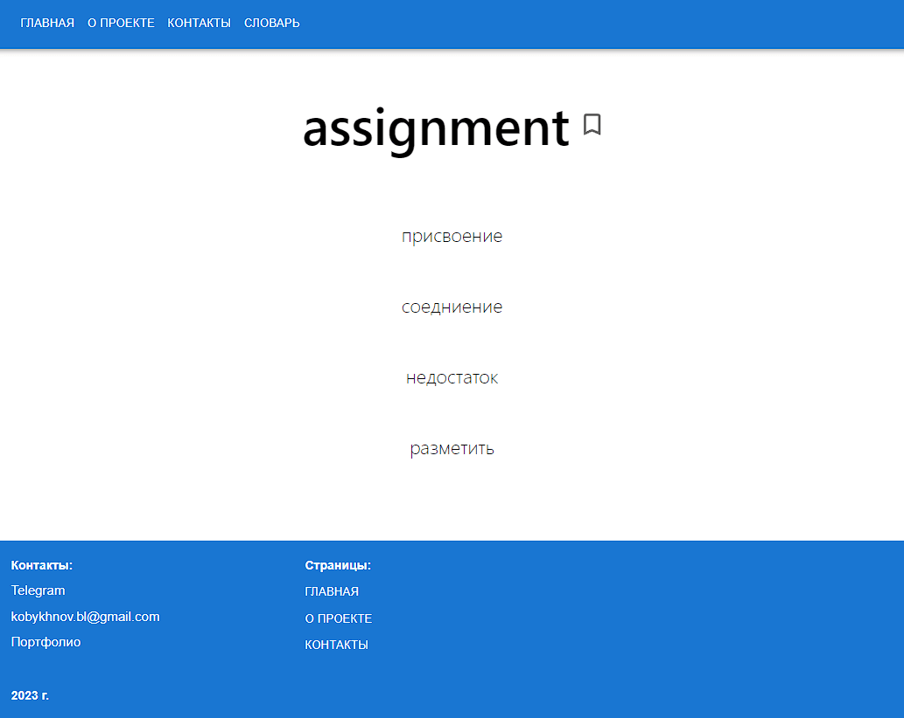
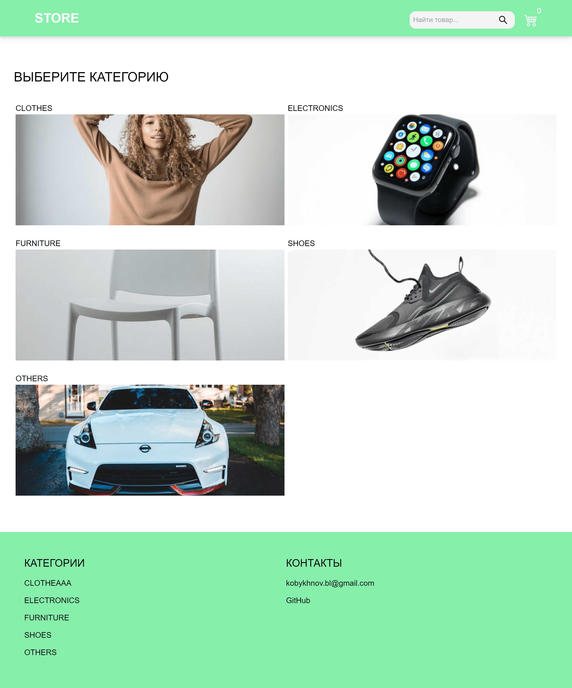
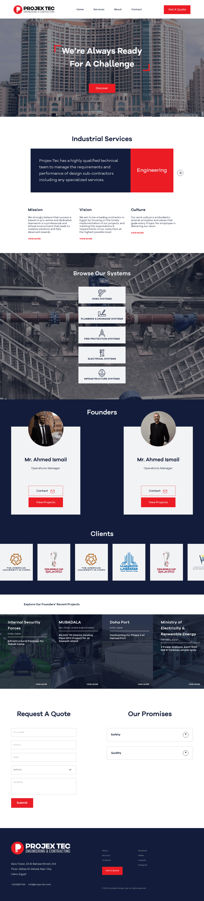
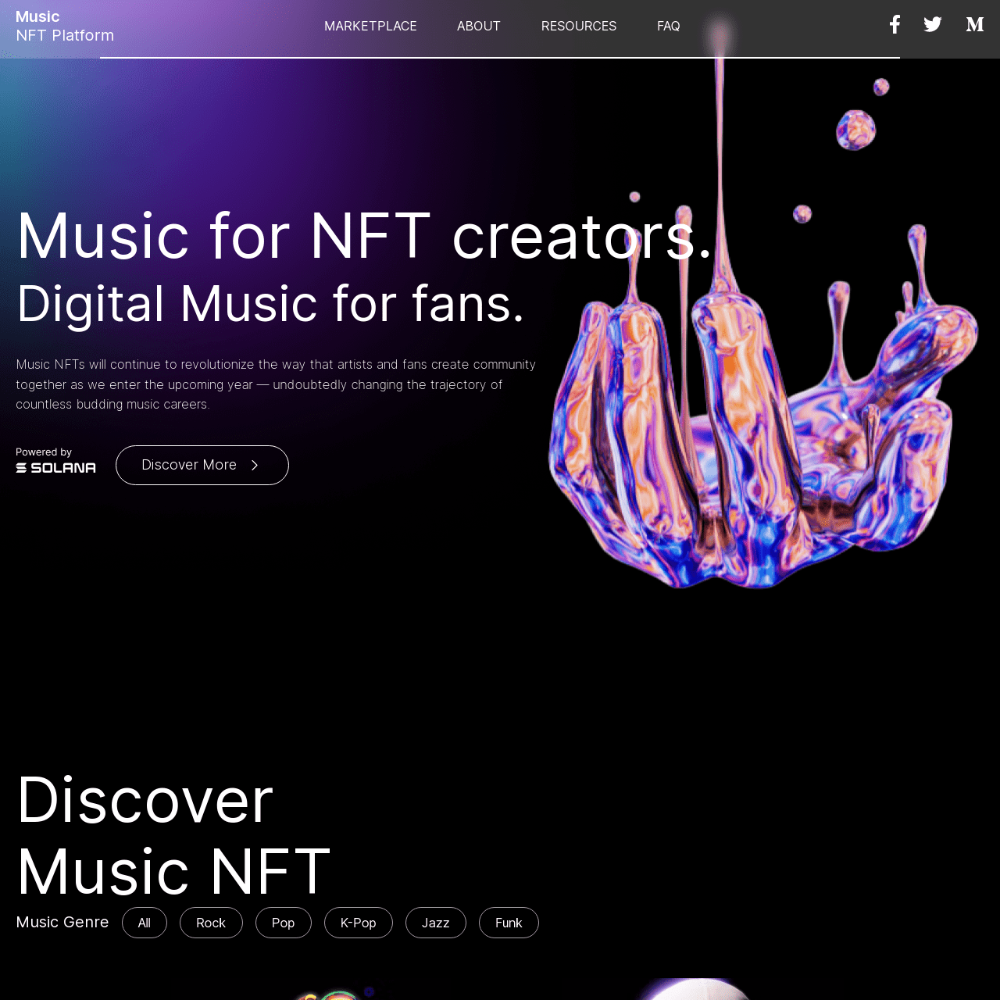
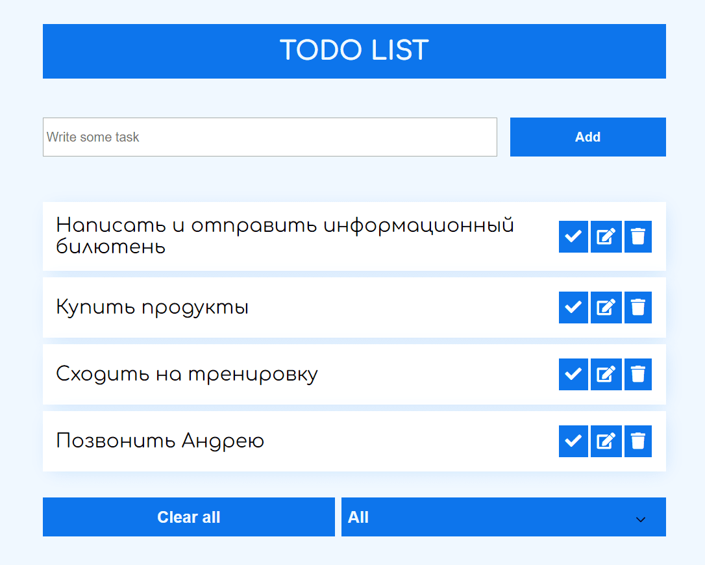

Используемые технологии:
- React.js
- Typescript
- Tailwind CSS
- Material UI
Что реализовано:
- SPA приложение
- Получение наборов слов по API (JSONBIN)
- Функция "добавления в словарь", позволяет добавлять слова в хранилище, доступное из любого места приложения
- Выбор набора слов - сейчас доступны переводы с английского на русский, а также с русского на английский
- Просмотр результов после прохождения теста, с показом ошибок и набранных баллов
- Адаптация под маленькие экраны и мобильные устройства

Используемые технологии:
Что реализовано:
- Статическая генерация страниц
- Получение списка категорий и товаров
- Пагинация
- Сортировка товаров по цене
- Поиск по ключевому слову
- Добавление / удаление товаров в корзине
- Тестовая оплата с помощью сервиса Stripe
- Адаптация под маленькие экраны и мобильные устройства
- Skeleton loading для каждой страницы

Используемые технологии:
- HTML
- CSS
- JavaScript
- Webpack 5
- Библиотеки: scrolltosmooth.js, docSlider.js
Что реализовано:
- Адаптивная верстка по макету из Figma
- Fixed Header
- Плавный скролл к якорям
- Форма с валидацией
- Слайдер по кнопке
- Touch slider
- Модальное окно при отправке формы

Используемые технологии:
- HTML
- CSS
- JavaScript
- Webpack 5
- Библиотеки: scrolltosmooth.js, docSlider.js
Что реализовано:
- Адаптивная верстка по макету из Figma
- Burger-menu
- Плавный скролл к якорям
- Сортировка карточек альбомов по жанрам
- Выгрузка карточек альбомов из объекта

Используемые технологии:
Что реализовано:
- Добавление новой задачи
- Редактирование существующей задачи
- Отметка о выполнении задачи
- Удаление задачи
- Очистка всего списка задача
- Сортировка задач на "Выполненые" и "Невыполненные"
- Использование localstorage для сохранения списка задач после перезагрузки страницы